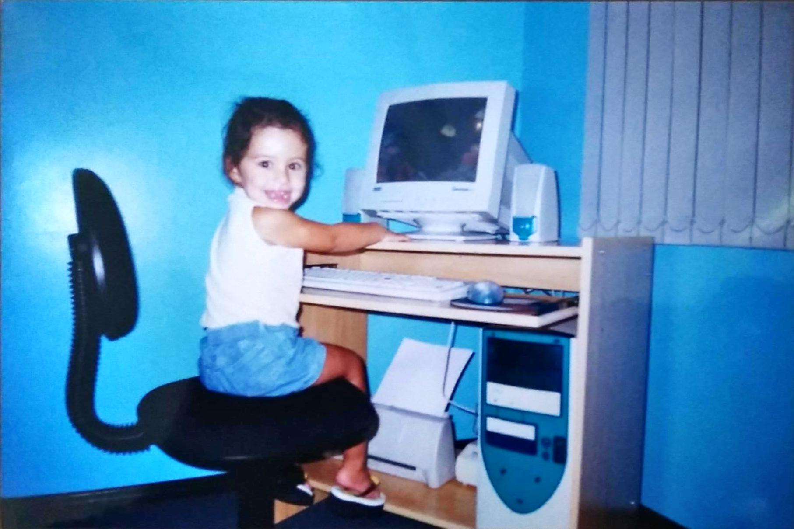
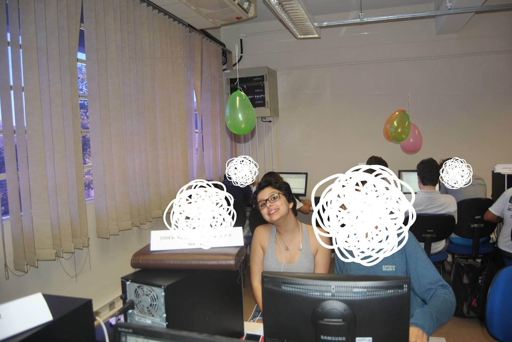
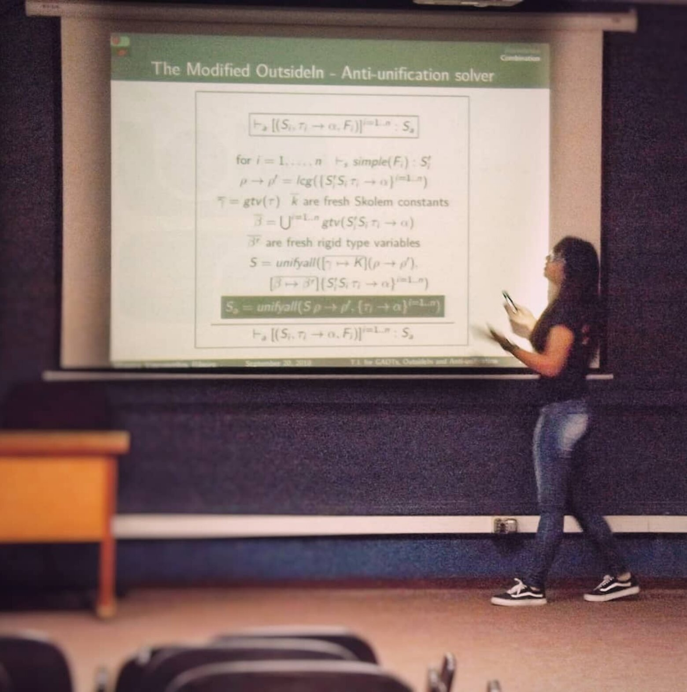
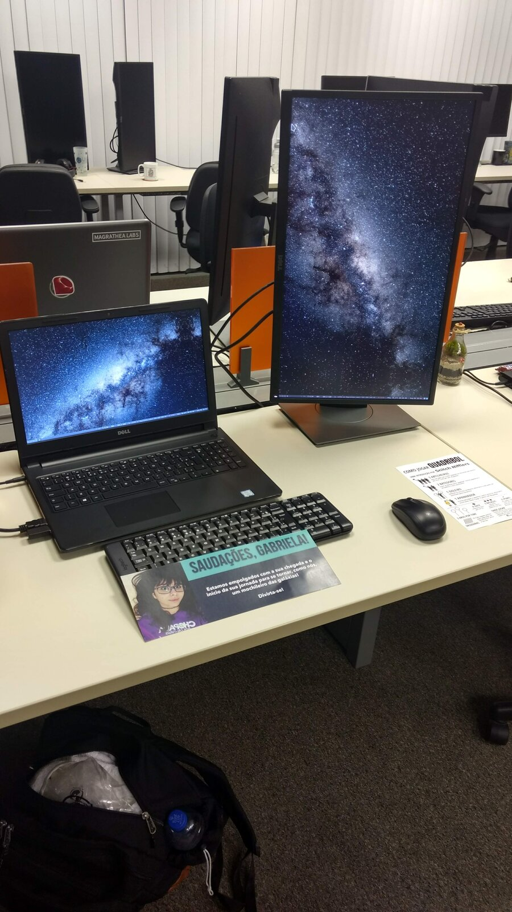
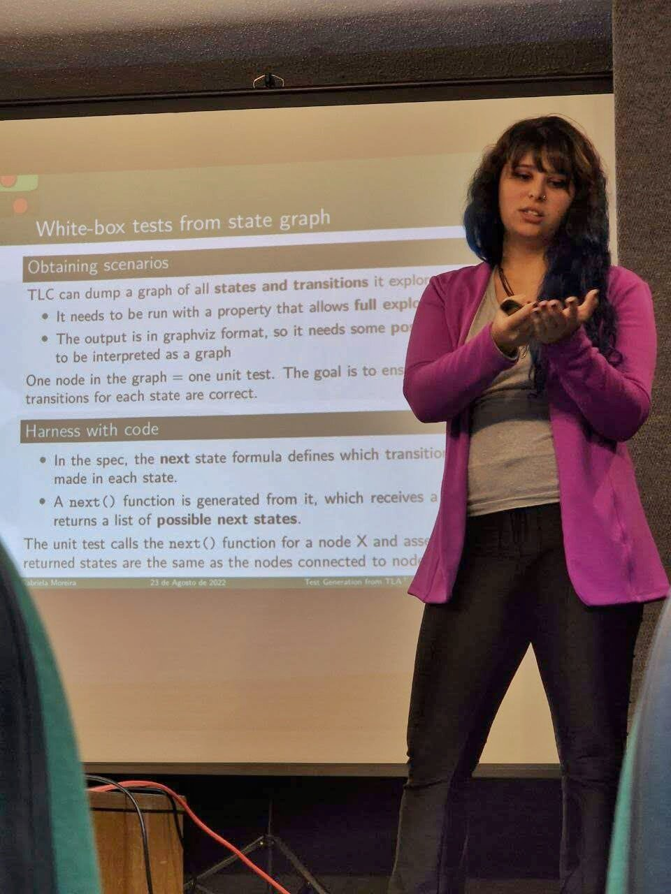
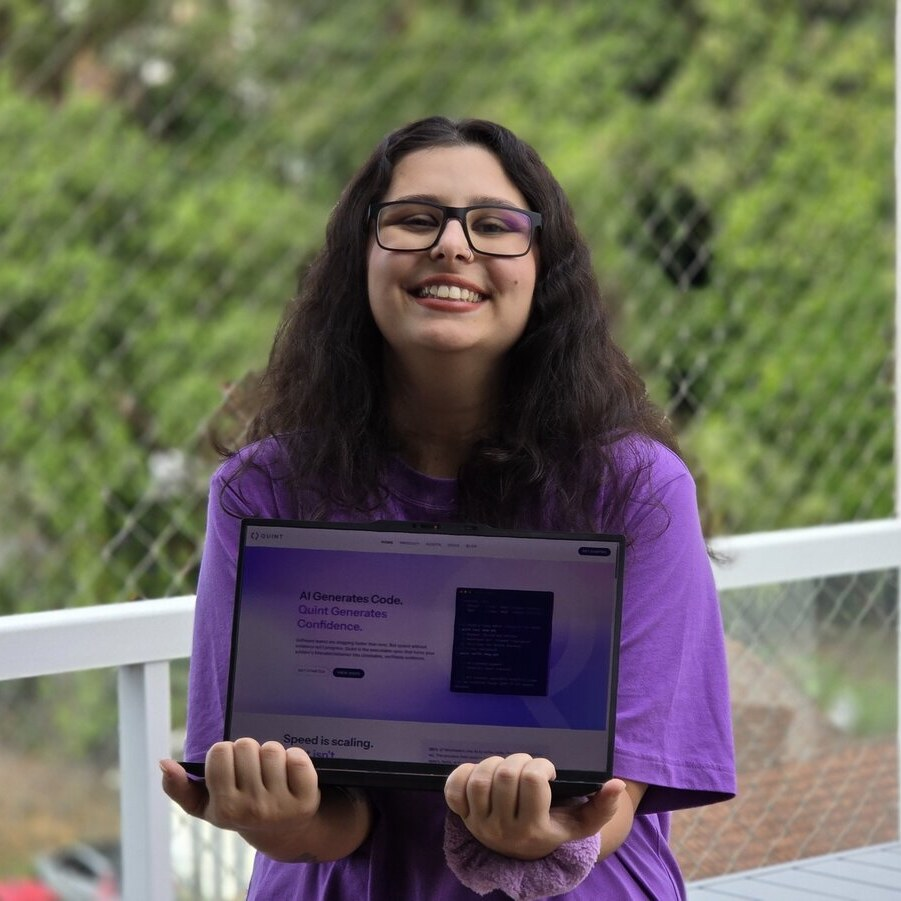

I was a little girl who really liked math. Then I was a teenager who really liked math and computers. I finished high school and had to pick between math and computers. I picked Computer Science.

I really like software. I co-founded a company called Quint to help other developers make software trustworthy.
Here's sort of how my career went so far.
I was a little girl who really liked math. Then I was a teenager who really liked math and computers. I finished high school and had to pick between math and computers. I picked Computer Science.

University started and two things caught my attention on the very first semester:

A couple of years passed with me having fun, exploring some Linux distros and nerding out on the corridors. I started taking the class that is actually when we're supposed to learn Haskell. The professor, Cristiano, was impressed by me (of course he was, I already knew Haskell). So he invited me to do research with him. First task: read "Propositions as Types". What a paper! I got hooked, and my work there can be summarized with these three projects:

While working on my research, the coolest company in the city (by my standards) started approaching me for an internship opportunity. I said no, busy with research. Then my research finished and I could either start a new year of it, or take the internship. I was too curious about the cool company, so I tried it! I started in a data science project, but didn't find that much fun. After a few months, I changed into a development role and had a really good time with great teams around me.

I was still in the university, and time was approaching when I had to write my thesis. Then, in perfect timing, over pizza and beer at the office, a colleague said "I saw something that made me think of you, it's called TLA+, you should check it out". I googled it in my computer and it was love at first sight. For someone who loved learning logic and was struggling with queues and message orderings everyday, TLA+ felt like the ultimate thing developers should be using.
So I wrote my thesis about generating code out of TLA+ specs, which made me form a really good and somewhat unique mental model of TLA+ specs in my brain. I started a master's right after this, and continued my work on tooling for TLA+, this time generating tests. I thought that if teams could get code and tests for free out of a TLA+ spec, they would have a stronger case for spending time writing one in their work hours. I was not naive tho: I knew that what I was doing was just some first step attempt from a random student, not something that would change the world.

In the middle of my master's though, something unimaginable (for me!) happened. The TLA+ people started noticing my work. Markus Kuppe said I should apply to speak at the TLA+ Conference, which I did. You can actually check the video for this and probably mind the extra accent I had back then. That was when Igor Konnov met me and told me I should apply to work at Informal Systems, a company that I was aware of and was actively trying to apply TLA+ and test generation on real engineering teams!
So I joined Informal Systems and they had this idea sort of in a drawer: what if we had a different surface syntax for TLA+ that addresses all the struggles we see the engineers having, and that would be too hard or impossible to fix on the TLA+ tools? Igor asked if I'd like to work on this project, and I couldn't believe it! Formal methods and programming language theory as a full-time job? I'm the luckiest girl alive!
(I still feel like that btw).
So that's how Quint got started. The team changed, I stayed, and more and more I learned to stand up for it. Upper management learned to trust me. I had dreams, and they started coming true. Then we started a company, spinning out of Informal Systems, and my co-founders said "Gabriela, we think you should be the CEO if you want to." I wanted to.
